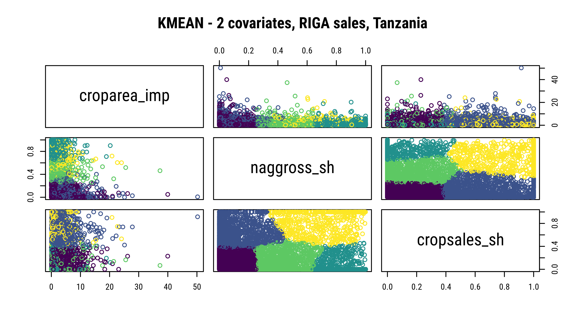

5 Clustering of Farm Households
[in progress] Along segmenting variables.
Using DBScan clustering
5.0.1 Ethiopia
Using PAM clustering (with and without cultivated area)
croparea_imp naggross_sh cropsales_sh
[1,] 1.777000 0.04647670 0.3230641
[2,] 0.990995 0.03009189 0.2256410
[3,] 0.325710 0.10544630 0.1869159
[4,] 3.034855 0.07862181 0.3500000
[5,] 0.555250 0.07131433 0.7800000 naggross_sh cropsales_sh
[1,] 0.01091754 0.2248521
[2,] 0.01346782 0.4746781
[3,] 0.00000000 0.0000000
[4,] 0.62812304 0.1600000
[5,] 0.03514252 0.8255319 naggross_sh cropsales_sh
1 0.57027423 0.71505265
2 0.68301465 0.09251775
3 0.04201491 0.08421301
4 0.04214551 0.39967303
5 0.04059558 0.81931199Using RIGA Sales (median and mean)
naggross_sh shcropsold
[1,] 0.0000000 0.00000000
[2,] 0.4440333 0.01014710
[3,] 0.0252512 0.32914680
[4,] 0.1702845 0.01257222
[5,] 0.8090037 0.00000000 naggross_sh shcropsold
1 0.03702533 0.30665257
2 0.76212952 0.02804418
3 0.32816822 0.03223278
4 0.27527290 0.81719637
5 0.02214218 0.022614165.0.2 Tanzania
croparea_imp naggross_sh cropsales_sh
[1,] 0.4896696 0.3736405 0.1257884
[2,] 1.3556967 0.2166206 0.2581831
[3,] 2.8692210 0.1763824 0.3698900
[4,] 5.1880694 0.2346175 0.3627784
[5,] 10.8293863 0.1062394 0.3955653 naggross_sh cropsales_sh
[1,] 0.04174427 0.06773844
[2,] 0.44899072 0.07575580
[3,] 0.66162473 0.83014864
[4,] 0.07178713 0.57067430
[5,] 0.91425340 0.00000000 naggross_sh cropsales_sh
1 0.06142988 0.11101702
2 0.09790395 0.64518720
3 0.86852020 0.03851267
4 0.43913005 0.12366595
5 0.70770926 0.81723616
5.0.3 Ghana
croparea_imp naggross_sh cropsales_sh
[1,] 0.6779281 0.2986156 0.1551922
[2,] 2.1448338 0.1874032 0.2712700
[3,] 4.0278243 0.1554365 0.4637593
[4,] 7.0819979 0.1593935 0.5693198
[5,] 14.1235285 0.1909084 0.3716560 naggross_sh cropsales_sh
[1,] 0.02359680 0.81600130
[2,] 0.91558737 0.02324716
[3,] 0.01247593 0.01365426
[4,] 0.81121812 0.71535176
[5,] 0.03352676 0.39879155